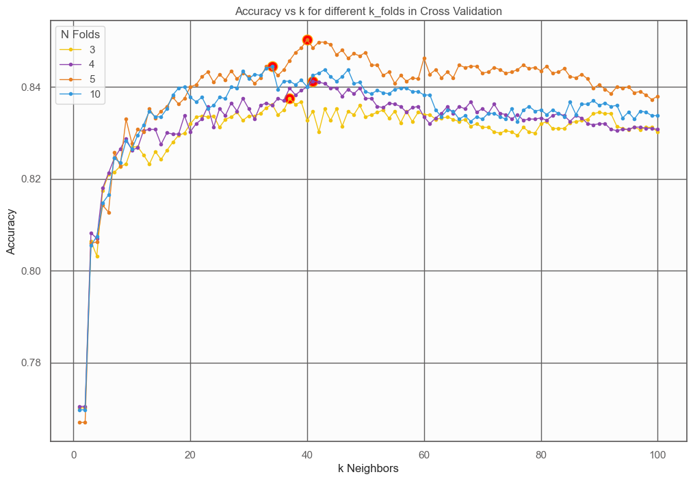

Our own KNN Implementation
Machine learning algorithms are often evaluated by their simplicity, computational feasibility, and accuracy. KNN, or K-Nearest Neighbors, is one of the simplest yet surprisingly effective supervised classification algorithms. My classmate and I recently dove into this algorithm by building it from scratch and applying it to the waveform dataset — a classic benchmark problem. Here you can see the simple way we implemented this algorithm, and check out the rest of the code for this project. repo
The dataset consists of 5000 samples, 3 balanced classes, and 21 attributes, each laced with noise to make classification more challenging. Our task? Design and evaluate a KNN classifier capable of competing with the optimal Bayesian classification rate of 86%.
The first step in our project was an exploratory data analysis to better understand the dataset. We confirmed the features' normal distributions through Q-Q plots and identified clusters with significant class overlap using scatterplots. Fortunately, the dataset was high quality, with negligible outliers, allowing us to dive directly into classification.
Next, we experimented with hyperparameter tuning. Through cross-validation with varying numbers of folds and neighbors, we found that a 5-fold cross-validation and k=40k=40k=40 neighbors achieved the best balance between accuracy and computational efficiency.

To improve the algorithm's runtime, we implemented two data reduction techniques: Bayesian region cleaning and data condensation. These steps reduced the training data from 4000 samples to just over 600 while maintaining a near-optimal accuracy of 85%. While this approach reduced execution time by over 80%, we noted that in larger-scale applications, such reductions could prove invaluable.
We also experimented with KD-Trees to optimize the search for neighbors. Unfortunately, the high dimensionality of the dataset (21 features) and its modest size hindered performance, leading to slower execution times compared to the brute force approach.
The waveform dataset is an excellent testing ground for KNN, given its challenging class overlaps and noise. While our implementation achieved competitive accuracy, further work could explore dimensionality reduction techniques or advanced indexing structures for larger datasets.